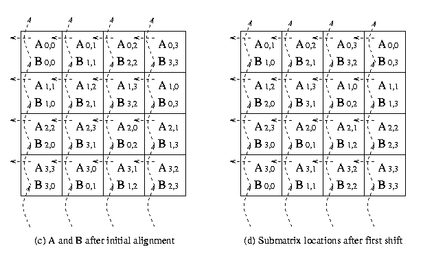

hyPACK-2013 Mode 1 : MPI 1.X - Matrix Computations MPI Lib. Calls
|
Module 5 : MPI programs on Dense & Sparse Matrix Computations -
Vector - Vector, Matrix -Vector, Matrix -Matrix Multiplication & Sparse Matrix
into Vector Multiplication Algorithms
and execute on Message Passing Cluster or Multi Core Systems that support
MPI library. |
Example 5.1
|
Write MPI program to compute dot product of two vectros using block-striped partittioning
wit uniform data distribuion .
|
Example 5.2
|
Write MPI program to compute dot product of two vectros
using block-striped partitioning with non-uniform data distribution.
|
Example 5.3
|
Write MPI program to compute dot product of two vectros using block-striped
partitioning with cyclic uniform data distribution .
|
Example 5.4
|
Write MPI program for implementation of infinity norm of a square matrix .
|
Example 5.5
|
Write MPI program for implementation of Matrix and Vector Mulltiplication using self-scheduling algorithm.
|
Example 5.6
|
Write MPI program for computation of the matrix -vector multiplication
on p processors of message passing cluster using block striped partitioning of a matrix.
|
Example 5.7
|
Write a parallel MPI program, for computing the matrix -vector multiplication
on p processor of message passing cluster using block-checkerboard
partitioning .
|
Example 5.8
|
Write MPI program for implementation of Matrix and Matrix Mulltiplication using self-scheduling algorithm .
|
Example 5.9
|
Description for implementation of MPI program to compute the Matrix Matrix Multiplication using block checkerboard partitioning and MPI Cartesian topology .
|
Example 5.10
|
Description for implementation of MPI program to compute the Matrix Matrix Multiplication using
block checkerboard partitioning and Cannon's Algorithm and MPI Cartesian topology .
|
Example 5.11
|
Description for implementation of MPI program to compute the Matrix Matrix Multiplication using
block checkerboard partitioning and Fox's Algorithm and MPI Cartesian topology
|
Example 5.12
|
Description for implementation of MPI program for sparse matrix and vector
Multiplication using block-striped partitioning .
|
Example 5.13
|
Efficient Parallel formulation for implementation of MPI program for sparse matrix and vector
Multiplication using block-striped partitioning .(Assignment Question)
|
| |
|
(Source - References :
Books
Multi-threading
-
[MC-MPI-02], [MCMPI-06], [MCMPI-07], [MCMPI-09], [MC-MPI10], [MCMPI-11],
[MCMTh-12],[MCBW-44], [MCOMP-01])
|
|
An overview of Sequential programs on Vector - Vector, Matrix -Vector, Matrix -Matrix
Multiplication Algorithms |
|
The MPI based parallel programs on dense matrix computations play an important role for performance of
several scientific and engineering applications on message passing clusters. Simple sequential programs on vector-vector
mulitplicaiton, Matrix Vector multiplcation,Matrix - Matrix Multiplciation and selected parallel algrotims and programs
on dense marix computations are given below.
are described below.
Vector- Vector Mutliplicatin :
Vectors can be partitioned in different ways and the partitions can be assigned to different process.
We briefly explain some well known partitioning techniques to write parallel programs.
In the striped partitioning
of a vector, the vector is divided into groups of contiguous elements and each process is assigned one such group.
A serial algorithm for vector-vector multiplication requires n multiplications and (n-1) additions.
The serial program is given below :
float Vect_vect (int n, float x[ ], float y[ ])
{
int i;
float dot_product;
for(i=0; i < n; i++) = 0.0;
dot_product = dot_product + (x[i] * y[i]);
return(dot_product);
}
Matrix - Vector Mutliplicatin :
Matrices can be classified into two broad categories, dense matrices and sparse matrices.
Dense or full matrices have few or no zero elements. Sparse matrices
have a majority of zero elements. In order to process a matrix input
in parallel, we must partition it so that the partitions can be assigned
to different processes. If we assume that an addition and multiplication
pair takes unit time, then the sequential run time of algorithm is n2.
For multiplying a dense matrix A of size m x n and a vector x of size n.
Atleast, three distinct parallel formulations of matrix-vector multiplication's are possible.
It depends on row-wise striping, column-wise striping,
or checkerboard striping of the matrix. The following examples
discuss common ways to partition matrices among processes to perform matrix-vector
multiplication. Serial algorithm of matrix vector multiplication
is explained below:
float MAT_VECT(int n, int m, float A[ ] [ ], float x[ ], float y[ ])
{
int i, j;
for(i=0; i < m; i++) = 0.0;
{
y[i] = 0.0;
for(j=0; j < n; i++) = 0.0;
y [i] = y [i] + A [i ][j]* x[j]);
}
}
Matrix - Matrix Mutliplicatin :
We discuss parallel algorithms for multiplying two dense, square
matrices A and B of size n to yield the product matrix.
All parallel matrix multiplication algorithms involves the scalar algebraic
operations performed on the blocks or submatrices of the original matrix
. Such algebraic operations on the submatrices are called block
matrix operations . If we assume that an addition and multiplication
pair takes unit time, then the sequential run time of conventional algorithm
is n 3 .
For multiplying a dense matrix A of size n and
dense matrix B of size n atleast, three distinct
parallel formulations of matrix-matrix multiplication's are possible.
It depends on row-wise striping, column-wise striping,
or checkerboard striping of the matrices A, B . The following examples
discuss common ways to partition matrices among processes to perform matrix-matrix
multiplication.
float Block_MAT_MULT(int n, int m , float A[ ] [ ], float B[ ] [ ], float C[ ] [ ])
{
int i, j, k;
for(i=0; i< n; i++) = 0.0;
{
for(j=0; j< n; j++) = 0.0;
{
C[i][k] =0.0;
for(j=0; k< n; k++)
C[i][k] = C[i][k] + A[i][k] * B[k][j];
}
}
}
|
Description of Programs - Dense/Sparse Matrix Comptuations
|
Objective
Write a MPI program, to compute the vector-vector multiplication on
p processors of message passing cluster using block-striped partitioning
with uniform data distribution. Assume that the vectors
are of size n and p is number of processes used and n
is divisible p.
Description
The partitioning is called block-striped if each process is assigned
contiguous elements. The process P0 gets the first n/p
elements, P1 gets the next n/p elements and so
on. The distribution of 16 elements of vector a on 4 processes is shown in Figure 7.

Figure 7. A Typical block-striped partitioning of a vector of size 16 on 4 processes
Initially process with rank 0 distributes the input vectors using
MPI_Scatter on p processes. Each process will perform local
dot product of the vectors and accumulate the partial dot product. Now
the process with rank 0 performs global reduction using MPI_Reduce to get the
final dot product of two vectros
Input
Process with rank 0 reads a real vectors of size n. Assume
that the number of elements n are greater than or equal to number
of processes p. You have to adhere strictly to the following format for the input files.
#Line 1 : Number of Elements (n)
#Line 2 : List of Elements (data).
A sample input file for the vector A is given below :
24
1.0 2.0 3.0 4.0 5.0 6.0
7.0 8.0 2.0 9.0 1.0 2.0
1.0 2.0 3.0 4.0 5.0 6.0
7.0 8.0 2.0 9.0 1.0 2.0
1.0 2.0 3.0 4.0 5.0 6.0
7.0 8.0 2.0 9.0 1.0 2.0
1.0 2.0 3.0 4.0 5.0 6.0
7.0 8.0 2.0 9.0 1.0 2.0
Output
Process with rank 0 prints the final dot product of two
vectors.

|
Objective
Write a MPI program, to compute the dot product of two vectors on p processors of cluster using
block-striped partitioning with non-uniform distribution of data .
Description
If p divides n evenly, processes P0 gets the
first n/p elements, P1 the next n/p
elements and so on. If p does not divide n evenly, and
r be the remainder, then first r processes get (n/p)+1
elements and remaining p-r processes get n/p elements.
The program described in Example 14 uses MPI_Scatter and MPI_Reduce
because the vector is equally distributed on p processes. Here,
we use MPI_Scatterv call, which distributes the vectors non-uniformly on all
processes.
Input
Process with rank 0 reads a real vectors of size n. Assume
that the number of elements n are greater than or equal to number
of processes p. You have to adhere strictly to the following format for the input files.
#Line 1 : Number of Elements (n)
#Line 2 : List of Elements (data).
A sample input file for the vector A is given below :
18
1.0 2.0 3.0 4.0 5.0 6.0
7.0 8.0 2.0 9.0 7.0 8.0
1.0 2.0 3.0 4.0 5.0 6.0
1.0 2.0 3.0 4.0 5.0 6.0
7.0 8.0 2.0 9.0 7.0 8.0
1.0 2.0 3.0 4.0 5.0 6.0
Output
Process with rank 0 prints the final dot product of two vectors
|
Objective
Write a MPI program, to compute the dot product of two vectors on p
processors of message passing cluster using block-striped partitioning
with cyclic uniform data distribution. Assume
that the vectors are of size n and p is number of processors
used and n is a multiple of p.
Description
In the Cyclic data partitioning process P0 gets
the first element, process P1 gets the next and so on. The
process Pp-1 gets (p-1)th element.
If the number of elements n is more than the number processes p,
then process P0 gets pth element,
process P1 gets (p+1)th element and so on.
The process is repeated till all the elements are assigned. If n
is not a multiple of p, then first r (r = n/p)
processes will get n/p +1 elements and remaining p-r
processes will get n/p elements, in cyclic fashion.
The Figure 8 illustrates the example for p = 4 and n = 16
Figure 8. Cyclic data partitioning of a vectorof size 16 on 4 processes
#Line 1 : Number of Elements (n)
#Line 2 : List of Elements (data).
A sample input file for the vector A is given below :
16
1.0 2.0 3.0 4.0 5.0 6.0
7.0 8.0 2.0 9.0 1.0 2.0
5.0 6.0 7.0 8.0
1.0 2.0 3.0 4.0 5.0 6.0
7.0 8.0 2.0 9.0 1.0 2.0
5.0 6.0 7.0 8.0
Output
Process with rank 0 prints the final dot product of two vectors
|
Objective
Write a MPI program to calculates infinity norm of a matrix
using row wise block-striped partitioning .
Description
The infinity norm of a square matrix is defined to be the maximum of sums of absolute
values of elements in a row, over all rows. Row-wise block
partitioning, is used and the idea is that the matrix m x n is striped
among p processors so that each processors stores m/p
rows of the matrix. A typical column-wise and row-wise
partitioning of the matrix is shown in the Figure 9.
Figure 9. Uniform column-wise and row-wise striped partitioning of 16 x 16 matrix on
4 processors of a cluster.
If a m x n matrix is partitioned on p processes (labeled
p0 , p1, p2,...,
pp-1), then process pi contains
rows with indices (m/p)i, (m/p)i+1, (m/p)i+2,
(m/p)i+3,........, (m/p)(i+1)-1.
Input
Assume A is a real matrix of size m x n. Also the
number of rows m should be greater than or equal to number of processes
p . Process with rank 0 reads input data. Format for
the input file is given below.
You have to adhere strictly the following format for the input files.
#Line 1 : Number of Rows (m) Number of columns(n).
#Line 2 : (data) (in row-major order. This means that the data of second row follows that of the
first and so on.)
Input file
A sample input file for the matrix A (8 x 8) is given below :
8 8
-1.0 2.0 3.0 4.0
5.0 6.0 7.0 8.0
2.0 3.0 4.0 5.0
6.0 7.0 8.0 9.0
3.0 4.0 5.0 6.0
7.0 8.0 9.0 10.0
4.0 5.0 6.0 7.0
8.0 9.0 10.0 11.0
5.0 6.0 7.0 8.0
9.0 10.0 11.0 12.0
6.0 7.0 8.0 9.0
10.0 11.0 12.0 13.0
7.0 8.0 8.0 10.0
11.0 12.0 13.0 14.0
8.0 -9.0 10.0 11.0
12.0 13.0 14.0 15.0
Output
Process with rank 0 prints the infinity norm value as given below
92.0
|
Objective
Write MPMD MPI program for computing the matrix-vector multiplication on p processors of
message passing cluster using Self Scheduling algorithm.
Description
This example illustrates , one of the most common parallel algorithm
prototype , the Self-Scheduling or Master-Slave algorithm.
This example is chosen not because it illustrates the best way to parallelize
this particular numerical computation (it doesn't), but it illustrates
the basic MPI send and MPI receive operations in the context of
fundamental type of parallel algorithm
applicable in many situations.
Figure 10 Communication pattern among master and slaves in self scheduling paradigm.
We assume that the matrix A of size n x n is available with master
process of rank 0 and the vector x of size n is available on all the slave processes,
whose rank start from 1 onwards .The idea is that one process, which we call
the master process, distributes the work load to slave
processes. When the slave finishes its workload, it informs the master
which assigns a new workload to the slave. This communication between
the master and slave is shown in Figure 10. This is very
simple paradigm where the co-ordination is done by master. Here,
the slave processes do not have to communicate with one another.
The master begins by broadcasting vector x to each slave.
It then sends one row of the matrix A to each slave .
At this point, the master begins a loop, terminated when it has received all of the entries
in the product. The body of the loop consists of receiving one entry in the product vector
from any slave , and sending the next task (row of matrix A)
to that slave. In other words, completion of one task by a slave is considered
to be a request for the next task. Once all the tasks have been handed out, termination messages
are sent.
After receiving the broadcast value of vector x , each slave
also enters in a loop to compute the product of a matrix row with vector.
Each slave computation is terminated by the receipt of the termination
message from master. The body of the loop consists of receiving
a row of matrix A, performing the dot product with
vector x, and sending the answer back to the master.
Input
The input should be in following format.
Assume that the real matrix is of size m x n
and the real vector is of size n . Also the number of rows
m should be greater than or equal to number of processes p.
Process with rank 0 reads the input matrix A and the
vector x . Format for the input files are given below.
Input file 1
The input file for the matrix should strictly adhere to the following format.
#Line 1 : Number of Rows (m), Number of columns (n).
#Line 2 : (data) (in row-major order. This means that the data of second row
follows that of the first and so on.)
A sample input file for the matrix (8 x 8) is given below :
8 8
1.0 2.0 3.0
4.0 2.0 3.0
2.0 1.0
2.0 3.0 4.0
2.0 3.0 2.0
1.0 1.0
3.0 4.0 2.0
3.0 2.0 1.0
1.0 1.0
4.0 2.0 3.0
2.0 1.0 1.0
4.0 2.0
2.0 3.0 2.0
1.0 2.0 3.0
2.0 2.0
3.0 2.0 1.0
1.0 2.0 1.0
1.0 1.0
2.0 1.0 4.0
3.0 2.0 1.0
3.0 3.0
4.0 1.0 2.0
1.0 2.0 3.0
4.0 3.0
Input file 2
The input file for the vector should strictly adhere to the following format.
#Line 1 : Size of the vector (n)
#Line 2 : (data)
A sample input file for the vector (8 x 1) is given below
#line 1 : 8
#Line 2 : 1.0 1.0 1.0 1.0 1.0 1.0 1.0 1.0
Output
Process with rank 0 prints the final matrix vector product result is given below.
18.0 18.0 17.0 19.0 17.0 12.0 19.0 20.0
|
Objective
Write a MPI program, for computing the matrix -vector multiplication
on p processor of message passing cluster using block striped partitioning
of a matrix.
Description
In the striped partitioning of a matrix, the matrix is divided
into groups of contiguous complete rows or columns, and each
processor is assigned one such group. The partitioning is called block-striped
if each processor is assigned contiguous rows or columns.
Striped partitioning can be block or cyclic.
In a
row-wise block striping of an nxn matrix on
p processors (labeled P0 , P1, P2,...,
P p-1 ), processor Pi contains
rows with indices (n/p)i, (n/p)i+1,
(n/p)i+2, (n/p)i+3,........,
(n/p)(i+1)-1.
A typical column-wise or row-wise partitioning of 16 x 16 matrix on 4 processors is
shown in the Figure 11
Figure 11. Uniform block-striped partitioning of 16 x
16 matrix on 4 processors.
The matrix A of size n x n is striped row-wise
among p processes so that each process stores n/p rows
of the matrix. We assume that the vector x of size n x
1 is available on each process . Now, process Pi
computes the dot product of the corresponding rows of the matrix
A[*] with the vector x[ * ]
and accumulate the partial result in the array y[ * ]. Finally, process
P0 collects the dot product of different
rows of the matrix with the vector from all the processes.
Input
Format for the input files are given below.
Input file 1
The input file for the matrix should strictly adhere to the following format.
#Line 1 : Number of Rows (m), Number of columns (n).
#Line 2 : (data) (in row-major order. This means that the data of second row
follows that of the first and so on.)
A sample input file for the matrix (16 x 16) is given below :
16 16
1.0 2.0 3.0
4.0 2.0 3.0
2.0 1.0
4.0 6.0 7.0
3.0 8.0 8.0
1.0 5.0
2.0 3.0 4.0
2.0 3.0 2.0
1.0 1.0
6.0 6.0 8.0
9.0 2.0 7.0
2.0 3.0
3.0 4.0 2.0
3.0 2.0 1.0
1.0 7.0
2.0 4.0 6.0
8.0 5.0 2.0
7.0 15.0
4.0 2.0 3.0
2.0 1.0 1.0
4.0 2.0
3.0 6.0 5.0
1.0 4.0 3.0
8.0 14.0
2.0 3.0 2.0
6.0 2.0 3.0
2.0 1.0
8.0 2.0 9.0
7.0 7.0 0.0
4.0 17.0
8.0 2.0 5.0
6.0 3.0 9.0
7.0 3.0
3.0 2.0 1.0
1.0 2.0 1.0
1.0 10.0
2.0 1.0 4.0
3.0 2.0 1.0
3.0 3.0
7.0 8.0 9.0
1.0 2.0 2.0
4.0 6.0
4.0 1.0 2.0
1.0 2.0 3.0
4.0 3.0
6.0 3.0 4.0
8.0 6.0 9.0
1.0 31.0
Input file 2
The input file for the vector should strictly adhere to the following format.
#Line 1 : Size of the vector (n)
#Line 2 : (data)
A sample input file for the vector (8 x 1) is given below
#line 1 : 16
#Line 2 : 1.0 1.0 1.0 1.0 1.0 1.0 1.0 1.0
1.0 1.0 1.0 1.0 1.0 1.0 1.0 1.0
Output
Process with rank 0 prints the final matrix vector product
|
Objective
Write a parallel MPI program, for computing the matrix -vector multiplication
on p processor of message passing cluster using block-checkerboard
partitioning . Assume that p is a perfect square number.
Special MPI routines can be used to arrange the processors in a square grid of q x q processors
where, q2=p. Also, assume that the size of the matrix is evenly divisible by q.
Description
In checkerboard partitioning, the matrix is divided into smaller
square or rectangular blocks (submatrices) that are
distributed among processes. A checkerboard partitioning splits
both the rows and the columns of the matrix, so no process
is assigned any complete row or column . Like striping
partitioning, checkerboard partitioning can be block or cyclic.
The Figure 12 explains how a 8 x 8 matrix is distributed on 16 processors
using block checkerboard and cyclic checkerboard partitioning
Figure 12. Checkerboard partitioning of 8 x 8 matrices on 16 processors
We assume that processes are arranged in q x q
matrix and processes are stored in row major order. As shown in Figure 12 for square
grid of 4 x 4 processors the matrix A of size m
x n is partitioned among p processes using
block checkerboard partitioning , such that each process stores
m/q x n/q block of the matrix A. The vector x
is distributed in portions of n/q elements to the first process
in each columns of q processes . For example, the processes P00, P10,
P20 and P30 get the n/q elements of the vector x.
Each process in the first column of each row in square grid of q x q processes,
possesses n/q elements of the vector.
Processes P00, P10, P20, P30 broadcast elements of the
vector to the other processes in the respective rows of the grid. Each process now stores
m/q x n/q blocks of the matrix A and
n/q elements of the vector x
Each process then performs multiplication of its block matrix with local vector elements and stores
the partial result in the vector y[* ]. Now, each process has resultant vector y of size
m/q and the first process in each row of square grid processes q x q will accumulate
the partial sum in the same row involving other processes in the same row of square grid of processes.
Finally, process P0 gathers accumulated partial sum on each process to obtain the resultant
vector y.
Input
Format for the input files are given below.
Input file 1
The input file for the matrix should strictly adhere to the following format.
#Line 1 : Number of Rows (m), Number of columns (n).
#Line 2 : (data) (in row-major order. This means that the data of second row
follows that of the first and so on.)
A sample input file for the matrix (16 x 16) is given below :
16 16
1.0 2.0 3.0
4.0 2.0 3.0
2.0 1.0
4.0 6.0 7.0
3.0 8.0 8.0
1.0 5.0
2.0 3.0 4.0
2.0 3.0 2.0
1.0 1.0
6.0 6.0 8.0
9.0 2.0 7.0
2.0 3.0
3.0 4.0 2.0
3.0 2.0 1.0
1.0 7.0
2.0 4.0 6.0
8.0 5.0 2.0
7.0 15.0
4.0 2.0 3.0
2.0 1.0 1.0
4.0 2.0
3.0 6.0 5.0
1.0 4.0 3.0
8.0 14.0
2.0 3.0 2.0
6.0 2.0 3.0
2.0 1.0
8.0 2.0 9.0
7.0 7.0 0.0
4.0 17.0
8.0 2.0 5.0
6.0 3.0 9.0
7.0 3.0
3.0 2.0 1.0
1.0 2.0 1.0
1.0 10.0
2.0 1.0 4.0
3.0 2.0 1.0
3.0 3.0
7.0 8.0 9.0
1.0 2.0 2.0
4.0 6.0
4.0 1.0 2.0
1.0 2.0 3.0
4.0 3.0
6.0 3.0 4.0
8.0 6.0 9.0
1.0 31.0
Output
Process with rank 0 prints the final matrix vector product
|
Objective
Write a MPI program, for computing the matrix-matrix multiplication
on p processors of message passing cluster using Self-Scheduling algorithm.
Description
This example illustrates , one of the most common parallel algorithm
prototype , the Self-Scheduling or Master-Slave algorithm.
This example is chosen not because it illustrates the best way to parallelize
this particular numerical computation (it doesn't), but it illustrates the basic MPI
library calls like, MPI send and MPI receive
in the context of fundamental type of parallel algorithm applicable in many situations.
We assume that a square matrix A of size n is available
on the master process with rank 0 and another square matrix B
of size n is available on all the slave processes ,whose
rank starts from 1 onwards. The idea is that the master process,
distributes the work load to slave processes. When the slave finishes
its workload, it informs the master , about the completion of the task assigned
and then master assigns a new workload to the slave . This is very simple
paradigm where the coordination is done by master. Here, the
slave processes do not have to communicate with one another. This communication
among the master and the slaves is shown in Figure 13.
Figure 13. Communication pattern among master and slave in self
scheduling paradigm.
The master process with rank 0 stores the final output square matrix
C of size n . The master process receives whole row of the
product matrix C from any slave, and sends the next task
(row of matrix A) to that slave processes. In other
words, completion of one task by a slave is considered to be a request
for the next task. Once all the tasks have been handed out, termination
messages are sent.
Each slave process, after receiving matrix B,
enters a loop which is terminated after receiving the termination message
from master. The body of the loop consists of receiving the row
of the matrix A, forming the entries Ci, j of
required row by doing computation with the received row of the matrix A
with the available matrix B , and sending the computed
row of the product matrix.
Input
Assume A and B are real square matrices of size n and
the number of rows n should be greater than or equal to number
of processes p. Process 0 reads the input matrices
A and B. Format for the input file is given below.
The input file for the matrices A and B
should strictly adhere to the following format.
#Line 1 : Number of Rows (n); Number of columns(n).
#Line 2 : (data) (in row-major order. This means that the data of second row follows that of
the first and so on.)
Input file &
Input file 1
A sample input file for the matrix A (8 x 8) is given below
8 8
1.0 2.0 3.0
4.0 2.0 3.0
2.0 1.0
2.0 3.0 4.0
2.0 3.0 2.0
1.0 1.0
3.0 4.0 2.0
3.0 2.0 1.0
1.0 1.0
4.0 2.0 3.0
2.0 1.0 1.0
4.0 2.0
2.0 3.0 2.0
1.0 2.0 3.0
2.0 2.0
3.0 2.0 1.0
1.0 2.0 1.0
1.0 1.0
2.0 1.0 4.0
3.0 2.0 1.0
3.0 3.0
4.0 1.0 2.0
1.0 2.0 3.0
4.0 3.0
Input file 2
A sample input file for the matrix B (8 x 8) is given below
8 8
1.0 2.0 3.0
4.0 2.0 1.0
2.0 1.0
1.0 2.0 3.0
4.0 2.0 1.0
2.0 1.0
1.0 2.0 3.0
4.0 2.0 1.0
2.0 1.0
1.0 2.0 3.0
4.0 2.0 1.0
2.0 1.0
1.0 2.0 3.0
4.0 2.0 1.0
2.0 1.0
1.0 2.0 3.0
4.0 2.0 1.0
2.0 1.0
1.0 2.0 3.0
4.0 2.0 1.0
2.0 1.0
1.0 2.0 3.0
4.0 2.0 1.0
2.0 1.0
Output
Process 0 prints final matrix-matrix product matrix C.
The output of the matrix - matrix multiplication is given below :
18.0 36.0 54.0 72.0
36.0 18.0 36.0 18.0
18.0 36.0 54.0 72.0
36.0 18.0 36.0 18.0
17.0 34.0 51.0 68.0
34.0 17.0 34.0 17.0
19.0 38.0 57.0 76.0
38.0 19.0 38.0 19.0
17.0 34.0 51.0 68.0
34.0 17.0 34.0 17.0
12.0 24.0 36.0 48.0
24.0 12.0 24.0 12.0
19.0 38.0 57.0 76.0
38.0 19.0 38.0 19.0
20.0 40.0 60.0 80.0
40.0 20.0 40.0 20.0
|
Objective
Write a MPI program, for computing the matrix-matrix multiplication
on p processors of IBM AIX cluster using block checkerboard partitioning
of the matrices . Special MPI routines on cartesian topology can
be used for checkerboard partitioning of matrices.
Assume that p= q2 and the size of square
matrices A and B is evenly divisible by q.
Description
Assume that A and B are square matrices of size
n and C be the output matrix. These matrices are dived into blocks or submatrices
to perform matrix-matrix operations in parallel.
For example, an n x n matrix A can be regarded as
q x q array of blocks Ai, j (0<=i
<q, 0<= j < q) such that each block is an (n/q)
x (n/q) submatrix. We use p processors to implement the
block version of matrix multiplication in parallel by choosing q
as a square root of p and compute a distinct block Ci,
j on each processor. Block and cyclic checkerboard partitioning of
a 8 x 8 matrix on a square grid (4 x 4) of processors is shown in the Figure 14.
Figure 14. Checkerboard partitioning of 8 x 8 matrices on 16 processors
The matrices A and B are partitioned into p
blocks, A i, j and
B i, j
(0<=i < q, 0<=j < q) of size
(n/q x n/q) on each process.
These blocks are mapped onto a q x q logical
mesh of processes. The processes are labeled from P0,0
to Pq-1,q-1. An example of of this situation is shown in
Figure 14.
Process Pi, j initially store block matrices Ai, j
and Bi, j and computes block Ci, j of result matrix.
To compute submatrix Ci, j, we need all submatrices, Ai,
k and Bk, j ( 0 <= k < q ).
To acquire all the required blocks, an all-to-all broadcast of matrix Ai, j 's
is performed in each row and similarly in each column of matrix Bi, j's.
MPI collective communication is used to perform this operations.
After Pi, j acquires, A i,0 ,
A i,1 , A i,2 ,
A i, q-1 and B0, j ,
B1, j , B2, j ,
Bq-1,
j , it performs the serial block matrix to matrix multiplication
and accumulates the partial block matrix Ci, j
of matrix C . To obtain the resultant product matrix C, processes
with rank 0 gathers all the block matrices by using MPI_Gather
collective communication operation.
MPI provides a set of special routines to virtual topologies.
An important virtual topology is the Cartesian topology .
This is simply a decomposition in the natural co-ordinate
(e.g., x,y,z ) directions.
Input
The input is given in the same format as explained in
Example 5.8 algorithm .
.
Assume that the number of processes is a perfect square.
Output
Process with rank 0 prints the final matrix-matrix multiplication results
Example 5.8 algorithm .
|
Example 5.10:
|
Description for implementation of MPI program to compute the Matrix Matrix Multiplication using
block checkerboard partitioning and Cannon's Algorithm and MPI Cartesian topology
(Download source codes :
mm_mult_cannon.c )
(Download input files :
mdata1.inp
and mdata2.inp )
|
Objective
Write a MPI program, for computing the matrix-matrix multiplication
on p processors of message passing cluster implementing block checkerboard partitioning
of matrices using Cannon's algorithm. Use MPI cartesian toplogy library calls.
Assume that p= q2 and the size of square matrices A and B is
evenly divisible by
Description
Cannon's algorithm is based on cartesian virtual topology. As
discussed in
Example 5.8 algorithm
there are p processors arranged in q x q square grid
of processors and the input matrices, A and B are distributed
among the processes in checkerboard fashion. It results in constructing
p block matrices of A and B. It uses only point-to-point
communication for circularly shifting blocks of matrix A and
matrix B among p processes.
The algorithm proceeds in q stages. The first step in this algorithm
is to perform initial allignment of the block matrix A and block
matrix B. The blocks of matrix A are circularly shifted to
the i positions to left in the row of the square grid of processes,
where i is the row number of the
process in the mesh. Similarly, blocks of matrix B are circularly
shifted j positions upwards, where j is the column
number of the process in the processes mesh. This operation
is performed by using MPI_Sendrecv_replace . MPI_Send
and MPI_Recv is not used for point-to-point communication, because
if all the processes call MPI_Send or MPI_Recv in
different order the deadlocked situation may arise.
The algorithm performs the following steps in each stage
1. Multiply the block of matrix A and matrix B and add
the resultant matrix to get the block matrix C, which is initially set to zero.
2. Circularly shift the blocks of matrix A to left in the rows of the processes and the blocks
of matrix B upwards in the columns of the square grid of processes in a
wrap around manner.
The communication steps for 4 x 4 square grid of processors mesh are explained in the Figure 15.


Figure 15. The communication steps in Cannon's Algorithm on 16 processors
Input
The input is given in the same format as explained in
Example 5.8 algorithm .
Output
Process with rank 0 prints the final product matrix and the results are given as in
Example 5.8 algorithm .
|
Example 5.11:
|
Description for implementation of MPI program to compute the Matrix Matrix Multiplication using
block checkerboard partitioning and Fox's Algorithm and MPI Cartesian topology
(Download source codes :
mm_mult_fox.c )
(Download input files :
mdata1.inp
and mdata2.inp )
|
Objective
Write a MPI program, for computing the matrix-matrix multiplication
on p processors of message passing cluster. Use a special MPI routines on cartesian
topology for block checkerboard partitioning of the matrices, Fox's Algorithm.
Assume that p = q 2 and the size of square matrices A and B is
evenly divisible by q
Description
This algorithm is based on cartesian virtual topology. As discussed
in
Example 5.8 algorithm ,
there
are p processes arranged in q x q mesh and the input
matrices are distributed among the processes in checkerboard fashion. It
results in constructing p block matrices of A and B.
The algorithm uses two types of communication, firstly it uses one-to-all
broadcast for blocks of matrix A in processes rows. Similarly
blocks of matrix B are circularly shifted j positions upwards,
where j is the column of the process in the processes mesh
using MPI_Sendrecv_replace. In this case MPI_Send and MPI_Recv
is not used for point-point communication because if all the processes
call MPI_Send or MPI_Recv in different order the deadlocked
situation may arise.
The algorithm proceeds in n = q stages and it performs the following step
in each stages.
1. Broadcast the block of matrix A on the diagonal process
of a particular row in the square grid of processes to other processes in the same row.
2. Multiply the block of matrix A and matrix B and add the resultant matrix
to get the block matrix C which is initially set to zero.
3. Circularly shift the blocks of matrix B upwards in the processes columns
and receives a fresh block of matrix B from the process below it. This selection is done
in wrap around manner.
4.Select the block of matrix A for the next row broadcast.
If Ai, j was broadcast in the current step then
select Ai,(j+1)mod q th block for the next broadcast.
This selection is also done in wrap around manner.
The communication steps for 4 x 4 square grid of processors are explained in the Figure 16.
Figure 16. The communication steps in Fox's Algorithm on 16 processors
Input
The input is given in the same format as explained in
Example 5.8 algorithm .
Output
Process with rank 0 prints the final matrix-matrix product and the result are given as in
Example 5.8 algorithm .
|
Example 5.12:
|
MPI program for implementation of sparse matrix and Vector Multiplicaiton
using block-striped partitioning
(Download source code :
sparse_matvect_fort.tar
)
|
Objective
Write a MPI program on sparse matrix multiplication of size n x
n and vector of size n on p processors of Parallel Processing Platform
Assume that n is evenly divisible by p .
Efficient storage format for sparse matrix
Dense matrices are stored in the computer memory by using two-dimensional
arrays. For example, a matrix with n rows and m columns,
is stored using a n x m array of real numbers. However, using the
same two-dimensional array to store sparse matrices has two very important
drawbacks. First, since most of the entries in the sparse matrix are zero,
this storage scheme wastes a lot of memory. Second, computations involving
sparse matrices often need to operate only on the non-zero entries of the
matrix. Use of dense storage format makes it harder to locate these non-zero
entries. For these reasons sparse matrices are stored using different data
structures.
The Compressed Row Storage format (CRS) is a widely
used scheme for storing sparse matrices. In the CRS format,
a sparse matrix A with n rows having k non-zero entries
is stored using three arrays: two integer arrays rowptr and colind,
and one array of real entries values. The array rowptr is
of size n+1, and the other two arrays are each of size k.
The array colind stores the column indices of the non-zero entries
in A, and the array values stores the corresponding non-zero
entries. In particular, the array colind stores the column-indices
of the first row followed by the column-indices of the second row followed
by the column-indices of the third row, and so on. The array rowptr
is used to determine where the storage of the different rows starts
and ends in the array colind and values. In particular, the
column-indices of row i are stored starting at colind
[rowptr[i]] and ending at (but not including)
colind [rowptr[i+1] ]. Similarly, the values of the non-zero
entries of row i are stored at values [rowptr[i] ] and ending at
(but not including) values [rowptr[i+1] ]. Also note that the number of
non-zero entries of row i is simply rowptr[i+1]-rowptr[i].
|
|
Figure 19 Representation of Sparse Matrix in Compressed Row Storage ( CRS ) format
Serial sparse matrix vector multiplication
The following function performs a sparse matrix-vector multiplication
[y]={A} {b} where the sparse matrix A is of size n x m,
the vector b is of size m and the vector y is of size
n. Note that the number of columns of A (i.e., m )
is not explicitly specified as part of the input unless it is required.
void SerialSparseMatVec(int n, int *rowptr, int *colind, double *values
double *b, double *y)
{
int i, j, count ;
count = 0;
for(i=0; i<n; i++)
{
y[i] = 0.0;
for (j=rowptr[i]; j<rowptr[i+1]; j++)
y[i] += value [count] * b [colind[j]];
count ++;
}
}
Description of parallel algorithm
Consider the problem of computing the sparse matrix-vector product
[y] = {A}{b} where A is a sparse matrix of
size m x n and b is a dense vector using block striped
partitioning . In the block striped partitioning of a
matrix, the matrix is divided into groups of complete rows or columns,
and each process is assigned one such group.

Figure 20. The data needed by each processor in order to compute
the sparse matrix-vector product
In Figure 20, a sparse matrix A and the corresponding vector
b are distributed among three processors. Note that processor po
needs to receive elements {4,5,7} from processor p1
and elements {8,10} from processor p2 .
However, processor p2 needs to receive only elements {4,6} from processor
p1. The process p1
needs to receive elements {2,3} from process p0 and
elements {8,9,11} from process p2.
Since the exact position of the non-zeros in A is not known a
priori, and is usually different for different sparse matrices, we can
not write a message-passing program that performs the required data transfers
by simply hard coding. The required communication patterns may be different
for different processes. That is, one process may need to receive some
data from just a few processes whereas another process may need to receive
data from almost all processes.
The present algorithm partitions the rows of matrix A using block-striped
partitioning and the corresponding entries of vector b
among the processes, so that each of the p processes gets m/p
rows of the matrix and n/p elements of the vector. The portion
of the matrix A obtained by block-striped partitioning,
is assigned to each process and the non-zero entries of the sparse
matrix A is stored using the compressed storage (CSR) format
in the arrays rowptr, colind and values. To obtain
the entire vector on all processes, MPI_Allgather collective
communication is performed.
Each process now is responsible for computing the elements of the
vector y that correspond to the rows of the matrix that it stores
locally. This can be done as soon as each process receives the elements
of the vector b that are required in order to compute these serial
sparse dot-products.
This set of b elements depends on the position of the non-zeros
in the rows of A assigned to each process. In particular, for
each process pi, let Ci be
the set of column-indices j that contain non-zero entries overall
the rows assigned to this process. Then process pi
needs to receive all the entries of the form bj for all
j in Ci .
It is a simple parallel program but inefficient way of solving
this problem because to write a message-passing program in which all the
processes receive the entire b vector. If each row in the
matrix has on the average d non-zero entries, then each process
spends (md/p) time in serial algorithm. The program will achieve
meaningful speedup only d >= p . That is, the number of non-zero
entries at each row must be at least as many as the number of processes.
This scheme performs well when the sparse matrices are relatively dense.
However, in most interesting applications, the number of non-zero entries
per row is small, often in the range of 5 to 50. In such cases, the algorithm
spends more communication time relative to computation.
This example is chosen not because it illustrates the best way
to parallelize this particular sparse numerical computations, because
it illustrates the basic MPI_Allgather operations and CRS
scheme in the context of parallel algorithm, applicable in many situations.
Remark
One can design efficient algorithm by reducing communication cost by
storing the necessary entries of the vector b . In the above algorithm,
the overall communication performed by each process can be reduced if
each process receives from other processes only those entries of the
vector b are needed. In this case, we further reduce the communication
cost by assigning only rows of the sparse matrix to processes such that
the number of rows required but remotely stored entries of the vector b
is minimized. This can be achieved by performing a min-cut partitioning
of the graph that corresponds to the sparse matrix. We first construct
graph corresponds to sparse matrix and the graph is partitioned among p
processes. The off process communication is developed to identify the
required values of the vector b residing on neighbouring
processes.
|
Input
The input is available in following format.
Assume that the sparse square matrix is of size n and is divisible
by the number of processes p . Assume that the vector is
of size n. For convenience, the sparsity is defined as maximum
non-zero elements in a row, over all the rows. In the given example sparsity
is 4. All the entries in the sparse matrix are floating point numbers.
Process 0 reads the data. You have to adhere strictly the
following format for the input files.
Input file 1
# Line 1 : (Sparsity value)
# Line 2 : (Size of the sparse matrix)
# Line 3 : (data in row-major order) This means that
the data of second row follows that of the first and so on.
A sample input file for the sparse matrix of size 16 x 16 is given below
4
16
5.0 0.0 3.0 0.0
3.0 0.0 0.0 0.0
0.0 0.0 0.0 0.0
0.0 0.0 5.0 0.0
0.0 2.0 3.0 0.0
0.0 0.0 0.0 1.0
0.0 0.0 0.0 8.0
0.0 0.0 0.0 0.0
0.0 0.0 3.0 0.0
8.0 0.0 1.0 0.0
0.0 0.0 0.0 0.0
0.0 7.0 0.0 0.0
0.0 0.0 2.0 7.0
0.0 0.0 0.0 3.0
0.0 0.0 0.0 6.0
0.0 0.0 0.0 0.0
0.0 0.0 3.0 0.0
6.0 0.0 0.0 0.0
7.0 0.0 0.0 4.0
0.0 0.0 0.0 0.0
1.0 0.0 0.0 0.0
3.0 1.0 0.0 0.0
0.0 0.0 0.0 0.0
0.0 0.0 6.0 0.0
0.0 0.0 3.0 0.0
0.0 0.0 8.0 1.0
0.0 0.0 0.0 0.0
3.0 0.0 0.0 0.0
0.0 0.0 0.0 0.0
8.0 0.0 0.0 2.0
0.0 1.0 0.0 0.0
0.0 0.0 1.0 0.0
0.0 0.0 0.0 4.0
0.0 0.0 0.0 0.0
3.0 0.0 1.0 0.0
0.0 8.0 0.0 0.0
0.0 0.0 0.0 0.0
3.0 0.0 8.0 0.0
0.0 7.0 0.0 0.0
0.0 0.0 0.0 1.0
0.0 0.0 0.0 0.0
3.0 0.0 6.0 0.0
0.0 0.0 8.0 0.0
0.0 0.0 4.0 0.0
0.0 0.0 7.0 0.0
4.0 0.0 0.0 0.0
0.0 0.0 0.0 5.0
0.0 6.0 0.0 0.0
0.0 0.0 0.0 5.0
0.0 0.0 0.0 3.0
0.0 0.0 1.0 0.0
4.0 0.0 0.0 0.0
0.0 0.0 8.0 0.0
0.0 0.0 0.0 5.0
1.0 0.0 0.0 0.0
0.0 8.0 0.0 0.0
0.0 0.0 0.0 3.0
0.0 0.0 0.0 0.0
1.0 0.0 0.0 5.0
0.0 0.0 7.0 0.0
0.0 0.0 3.0 0.0
0.0 0.0 0.0 1.0
0.0 0.0 0.0 4.0
0.0 0.0 0.0 1.0
Input file 2
# Line 1 : (Size of the vector)
# Line 2 : (data)
A sample input file for the sparse vector of size 16 is given below :
16
1.0 1.0 1.0 1.0 1.0 1.0 1.0 1.0
1.0 1.0 1.0 1.0 1.0 1.0 1.0 1.0
Output
Process with rank 0 prints the final sparse matrix-vector product.
16.0 14.0 19.0 18.0
20.0 11.0 15.0 12.0
16.0 19.0 21.0 22.0
13.0 22.0 16.0
9.0
|
Example 5.13:
|
Efficient implementation of sparse matrix and Vector Multiplicaiton
using block-striped partitioning
|
Objective
You have to write an efficient parallel program on sparse matrix
of size n and the vector of size n multiplication that executes
on p processors of message passing cluster. Assume that n is evenly divisible
by p . In order to make your programs more portable, you will be
using the MPI (Message Passing Interface).
Background
We can classify matrices into two broad categories according to the
kind of algorithms that are approriate for them. The first category is
dense or full matrices with few or no zero
entries. The second category is sparse matrices in which a majority
of the entries are zero. The computation and communication performed by
all the message-passing programs presented so far (matrix-vector
and matrix-matrix algorithms for dense matrices) are quite structured.
In particular, every processor knows with which processors it needs to
communicate and what data it needs to send and receive .
This information is used to map the computation on to the parallel computer
and to program the required data transfer. However, there are problems
in which we cannot determine a priori the processors that needs to communciate
and what data they need to transfer. These problems often involve operations
on irregular grid or unstructured data. Also, the exact communication patterns
are specific to each particular problem and it may vary from problem to
problem.
Message-passing programs in order to solve these problems efficiently
often need to dynamically determine the communication patterns of the algorithm.
That is, the parallel program consists of two conceptual steps. The first
step is responsible for determining which processors need to communicate
with each other and what data they need to send, and the second
step is processor that performs the actual computation. The Compressed
Row Storage format (CRS ) is used for storing sparse
matrices in the parallel program. The details are given in
Example 5.12 algorithm .
|
Unstructured Sparse Matrix and its associated Graph representation
Let A be an n x n unstructured sparse matrix that has
a symmetric structure. Let G (A) be a graph with n nodes
such that there is an edge between the ith and the jth
nodes of G(A) if and only if A (i, j)
 0
(or A (j,i)
0).
The matrix A is thus a weighed adjacency matrix of graph G(A)
in which each node corresponds to a row of A. A scalable parallel
implementation of matrix-vector multiplication exists for a sparse matrix
A provided that it is the adjacency matrix of a planar graph G(A).
A graph is planar if and only if it can be drawn in plane such that no
edges cross each other. Note that planarity of G(A) is a
sufficient, but not a necessary condition for the multiplication of matrix
A with a vector b to be scalable. 0
(or A (j,i)
0).
The matrix A is thus a weighed adjacency matrix of graph G(A)
in which each node corresponds to a row of A. A scalable parallel
implementation of matrix-vector multiplication exists for a sparse matrix
A provided that it is the adjacency matrix of a planar graph G(A).
A graph is planar if and only if it can be drawn in plane such that no
edges cross each other. Note that planarity of G(A) is a
sufficient, but not a necessary condition for the multiplication of matrix
A with a vector b to be scalable.
If the graph G(A) is planar, it is possible to partition
its nodes (and hence, the rows of A) among processors to yield a
scalable parallel formulation for sparse matrix-vector multiplication.
The amount of computation that a processor performs is proportional to
the total number of nodes in that processor's partition. If G(A)
is planer, the total number of words that a processor communicates is proportional
to the number of nodes lying along the periphery of that processor's partition.
Furthermore, if G(A) is planar, the number of processors
with whome a given processor communicates is equal to the number of partotions
with whom that processor's partition shares its boundaries. Hence, by reducing
the number of partitions (thus, increasing the size of partitions) it is
possible to increase the computation to communication ratio of the processors.

Figure 21. Sparse matrix and its associated graph
Above figure 21 shows a structurally symmetric randomly sparse matrix
and its associated graph. The vector is partitioned among the processors
such that its ith element resides on the same processor
that stores the ith row of the matrix. Figure 21 also
shows the partitioning of the graph among processors and the corresponding
assignment of the matrix rows to processors. While performing matrix-vector
multiplication with this partitioning, the ith row of A requires
only those elements of the vector whose indices correspond to the neighbours
of the ith node in G(A). The reason is that by the construction
of G(A), the ith row has a non-zero element
in the jth column if and only if j is connected
to i by an edge in G(A). As a result, a processor
performs communication for only those rows of A that correspond
to the nodes of G(A) lying at the boundary of the processor's
partition. If the graph G(A) partitioned properly, the communication
cost can be reduced significantly both in terms of the number of messages
and the volume of communication.
Partitioning an arbitrary graph G(A) to minimize interprocessor
communication is a hard combinatorial problem. However, there are several
good heuristics for graph partitioning. These partitioning techniques are
described in detail. Often, the origin of the unstructured sparse matrix
A lies in a finite element problem. In such a case, the graph G(A)
can be derived from the finite element graph directly.
Description of efficient parallel algorithm
Consider the problem of computing the sparse matrix-vector product
y = Ab where the sparse matrix A is of size n
x m , the dense vector b is of size m and the
vector y is of size n. For simplicity, we consider
m = n . This can be achieved by performing a min-cut partitioing
of the graph that correponds to the sparse matrix by designing efficient
algorithm by reducing communication cost by storing the necessary entries
of the vector b.
In the
Example 5.12 algorithm , the overall
communication performed by each processor can be reduced if each processor
receives from other processors only those entries of the vector b are
needed. In this case, we furhter reduce the communication cost by assigning
only rows of the sparse matrix to processors such that the number of required
but remotely stored entries of the vector b is minimized. For many
important problems, it is possible to reduce the communication cost down
to
() or (n/p)2/3.
This can be achieved by performing a min-cut partitioing of the graph that correponds
to the sparse matrix.
Since the structure of the sparse marix differs from instance to instance,
the pattern of data transfer among processors has to be determined during
the execution of the program. For such programs, each processor first determines
with which processors it needs to communicate and what elements it needs
to send and receive . It then uses this information to perform
the actual data transfers and finally proceeds to compute the matrix-vectir
product corresponding to the locally stored rows of the matrix. Here,
we develop CommInterfaceValues a communication module which performs
the required communication, so that each processor has the entries of the
b vector that are needed to perform the matrix-vector multiplication
of its local rows. Each procesor uses the CommInfoType data structure
to store information about its communication pattern and it is explained
below.
Details of CommInfoType data structure
typedef struct {
int nsnbrs, *spes;
int nrnbrs, *rpes;
int *sendptr, *recvptr;
int *sendind, *recvind;
double *sendbuf, *recvbuf
} CommInfoType;
The variable nsnbrs and nrnbrs store the number of processors
that this processor needs to send and to receive data, respectively.We
can think of these processors as being the neighbouring processors. The
actual ranks of these processors is stored in the arrays spes and
rpes for the sending and receiving processors, respectively.
The array spes is of the size nsnbrs, and the array rpes
is of size nrnbrs. The array sendptr and sendid store
the elements of the b vector to be sent to each processor.
In particular, the indices of the elements that are sent to the
i th neighboring are stored in sendind starting
at location sendptr [I ] and ending at location sendptr
[I+1] - 1. The array sendptr is of size (nsnbrs+1),
and the size of the array sendind is equal to the sum of the number
of elements that are sent to all the neighboring processors. The
array recvptr and recvind store the elements of the b
vector that are received from the neighboring processors.
|
|
Figure 22. The data needed by each processes - to compute the sparse matrix-vector
product
|
In particular, the indices of the elements that are received
from the ith neighboring are stored in recvind
starting at location recvptr [I ] and ending at location
recvptr[ I+1]-1.The array recvptr is of size (nrnbrs + 1),
and the size of the array recvind is equal to the sum of the number
of elements that are received from all the neighboring processors.
Finally, the array sendbuf and recvbuf are used as buffer
to store the element of the b vector that are sent and received.
These arrays are of the same size as the corresponding sendid and
recvind arrays, respectively. The following Figure 23 shows the values
of the CommInfoType data structure for the sparse matrix as shown
in the above Figure 22 for each one of the three processors.
|

Figure 23. The values of the CommInfoType data structure for the sparse matrix
Details of implementation
In the new program, we replace MPI_ALLGATHER communication operation
by efficient point-point and global communication functions to perform
minimum amount of communication that is needed. It receives
from each processor the required elements of vector b, and sends
to other processors the locally stored b elements that is needed.
If d is the average number of non-zeros on each row, then in the
worst case CommInterfaceValues will receive and send
max{nd/p,n} elements. However, if the sparse matrix is distributed
among the processor so that only a small number of remotely stored entries
of b are needed, then CommInterfaceVertices will communicate
only this small number of entries. In particular, for sparse matrices arising
in numerical simulations on two-dimensional domains, the matrix can be
distributed among the processor such that only
 ()
remote entries of b are needed. In this case, each processor will
send and receive only
()
elements. The overall amount of time required by the CommInterfaceVertices
depends not only on how many elements every processor needs to send
and receive but also on which processsors and in which order
these elements are sent. In particular, if every processor needs
to send and receive data from all the processors, then the
send and receive operations may lead to contention. This
contention can be eliminated if we use a more elaborate communication protocol
as discussed. In general, if every processor needs to send and receive
from only a small number of processors, contention problems are avoided.
The important steps in the algorithm is explained as below.
()
remote entries of b are needed. In this case, each processor will
send and receive only
()
elements. The overall amount of time required by the CommInterfaceVertices
depends not only on how many elements every processor needs to send
and receive but also on which processsors and in which order
these elements are sent. In particular, if every processor needs
to send and receive data from all the processors, then the
send and receive operations may lead to contention. This
contention can be eliminated if we use a more elaborate communication protocol
as discussed. In general, if every processor needs to send and receive
from only a small number of processors, contention problems are avoided.
The important steps in the algorithm is explained as below.
|
Step 1 : Determine the entries of the vector b that need
to be received from remote processors (This is done by scanning
the column indices of the local rows of the matrix. Every time we first
encounter column index k outside the range of the local stored entries
of b , we insert k into the array rentires entries. The array
rentries contains the nrecv entries of vector b that need
to be received).
The array rentries is dynamically allocated
and its purpose is to temporarily store the required remote entries of
vector b.
Step 2 : The vector gvec is used to determine whether or not a
given column-index that corresponds to a remotely stored entry has been encoutered before.
This is done as follows. We initially set all the entries of vector gvec
to zero and then set the entries that correspond to the locally stored
entries of b to one. Now as we scan the rows of the local matrix,
for each column-index k we check the value of gvec [k].
If it is zero, then we set it to one and put k into the rentries
array, otherwise we do nothing. This scheme ensures that we place k
into rentries only if it is a remotely stored entry and this is
the first time we encountered.
Step 3 : At this point the array rentries contains the nrecv entries
of vector b that need to be received. Determine from which processors these
entries are received and set-up the corresponding data structure in cinfo.
This is done
by first sorting in increasing order the remote entries.
Next we scan this sorted list and determine the processors that
store these elements.In doing so, we use the fact that processor Pi
stores the entries of the b vector starting at location
(i+1)*nlocal - 1, and the fact that the array rentries is
now sorted. The computed information is stored temporarily in the arrays
pes and ptr, whose function is identical to that of the arrays
rpes and recvptr of cinfo, respectively. Finally,
appropriate storage is allocated in the cinfo for the relevant fields,
and the information is copied there.
Step 4 : The next step in the SetUpCommInfo function each processor notifies
the processor from which it needs to receive b-vecor entries. Since
the matrix A can be non-symmetric, the only way for these processors
to know that they need to send information is by performing this
request. This is done as follows. First, the processors performs an ALLTOALL
communication operation in which every processor sends to every
to every other processor the number of entries it needs to receive
from it. This is done in the following code fragment. Two dynamically allocated
arrays receives and sends are used, each of size npes.
Each processor puts in receives[i] the amount of entries
it needs to receive from processor Pi. At the
end of the ALLTOALL operation, each processor stores in the array
sends the number of elements it needs to send. In particular,
sends [i] stores the number of entries that need to be send
to processor Pi.
Step 5. : Now, each processor scans the array sends and determines
how many elements it needs to send and to which processors. This
information is initially stored in pes and ptr, but are eventually
copied into the spes and sendptr fields of cinfo.
Also, every processor allocates space for the sendind and sendbuf
fields of cinfo.
Step 6. : So far, each processor knows how many entries it needs to send,
but it does not know exactly which entries to send. This is accomplished
by having each processor send the list of entries it needs to receive
from the corresponding processors. This list of entries is sent from the
array recvind and it is stored in the array sendind of the
cinfo data structure. Since each processor knows how many and where
it needs to send, it also knows where to place the received
indices. This communication is done by using non-blocking SEND and
RECEIVE operations as follows.
Step 7. : The following CommInterfaceValues performs the required communication,
so that each processor has the entries of the b vector that are
required to perform the matrix-vector multiplication of its local rows.
This communication is performed by using point-to-point SEND and
RECEIVE operations.
Step 8. : By using the information stored in the cinfo data structure,
each processor knows what it needs to receive and from which processors.
Thus, it proceeds to issue nrnbrs non-blocking RECEIVE operations.
The received elements are stored in the corresponding position of the recvbuf
array.
Now its processor sends the appropriate local entries of the
b vector to processors that need them. This is done in two steps.
In the first step, processor gathers all these indices (for all the processors)
into the array sendbuf. This is done by simply scanning the entire
sendind and storing the entries of the b vector in the corresponding
locations of sendbuf. In the second step, each processor issues
nsnbrs SEND operations to send these elements of vector
b.
Step 9 : Compute serial sparse matrix vector multiplication on
every processor. Collect the result on master processor.
Remarks
Despite the fact that our new program can potentially perform significantly
less communication, there may be cases in which our earlier sparse matrix-vector
program runs faster. This is because the new program has to spend
some time in function SetUPCommInfo determining the communication
pattern. If we want to perform a single matrix-vector multiplication involving
matrix A, then the time required by SetUpCommInfo may outweigh
the time saved in communication.
Fortunately, in most applications we need to multiply A multiple
times (each time with a different vector). In such cases, we need to determine
the communication pattern only once and then use it for matrix-vector product.
Furthermore, we can use the same communication pattern even when the values
of A change (but not the position of the non-zeros). Thus, the time
required by SetUpCommInfo becomes insignificant compared to the
overall savings in communication. Also note that the communication performed
in the SetUpCommInfo function can be eliminated when matrix A
has a symmetric structure.
Even though our new program scales with an increasing number of processors,
its memory requirements does not. This is because , every processor allocates
a vector global_b of size n which is used to both determine
which remote stored entries of b are needed and also is used to
store these received entries. Program can be modified so that it does not
need to allocate the vector thereby saving memory of the vector global_b .
|
Input
Assume that the input is given in the following format.
Assume that the sparse matrix is square of size n and the vector
of size n and 'n' is divided by the number of processors p .
All the entries in the sparse matrix are floating point numbers. Process
0 should read all the data. You have to adhere strictly the following format
for the input file.
#Line 1 : (Size of the sparse matrix)
#Line 2 : (data) (in row-major order. This means that
the data of second row follows that of the first and so on.)
#Line 3 : (Size of the vector)
#Line 4 : (data)
A sample input file for the sparse matrix (16 x 16) and vector size (16) will look as follows
16
5.2 0.0 3.4 0.0
3.8 0.0 0.0 0.0
0.0 0.0 0.0 0.0
0.0 0.0 5.3 0.0
0.0 2.0 3.4 0.0
0.0 0.0 0.0 1.9
0.0 0.0 0.0 8.2
0.0 0.0 0.0 0.0
0.0 0.0 3.4 0.0
9.5 0.0 0.0 0.0
0.0 0.0 0.0 0.0
0.0 7.1 0.0 0.0
0.0 0.0 2.6 7.9
0.0 0.0 0.0 3.4
0.0 0.0 0.0 6.3
0.0 0.0 0.0 0.0
0.0 0.0 3.4 0.0
6.8 0.0 0.0 0.0
7.2 0.0 0.0 4.6
0.0 0.0 6.7 0.0
1.8 0.0 0.0 0.0
3.4 1.5 0.0 0.0
0.0 0.0 0.0 0.0
0.0 0.0 6.9 0.0
0.0 0.0 3.4 0.0
0.0 0.0 8.3 1.6
0.0 0.0 0.0 0.0
3.6 0.0 0.0 0.0
0.0 0.0 0.0 0.0
9.2 0.0 0.0 2.7
0.0 0.0 0.0 0.0
0.0 0.0 1.9 0.0
0.0 0.0 0.0 4.4
0.0 0.0 0.0 0.0
3.5 0.0 1.1 0.0
0.0 8.6 0.0 0.0
0.0 0.0 0.0 0.0
3.4 0.0 9.1 0.0
0.0 7.6 0.0 0.0
0.0 0.0 0.0 0.0
0.0 0.0 0.0 0.0
3.7 0.0 6.5 0.0
0.0 0.0 8.5 0.0
0.0 0.0 4.6 0.0
0.0 0.0 7.2 0.0
4.8 0.0 0.0 0.0
0.0 0.0 0.0 5.8
0.0 6.6 0.0 0.0
0.0 0.0 0.0 0.3
0.0 0.0 0.0 6.2
0.0 0.0 1.9 0.0
4.5 0.0 0.0 3.3
0.0 0.0 8.4 0.0
0.0 0.0 0.0 5.4
0.0 0.0 0.0 0.0
0.0 9.2 0.0 0.0
0.0 0.0 0.0 3.2
0.0 0.0 0.0 0.0
0.3 0.0 0.0 5.6
0.0 0.0 7.3 0.0
0.0 0.0 3.4 0.0
0.0 0.0 0.0 0.2
0.0 0.0 0.0 4.6
0.0 0.0 0.0 0.4
16
3.8 2.0 3.5 8.2
1.6 4.3 6.3 9.2
7.1 1.6 4.2 6.5
5.0 2.2 2.5 7.0
Output
Process 0should print the final sparse matrix vector product
|
| |
|